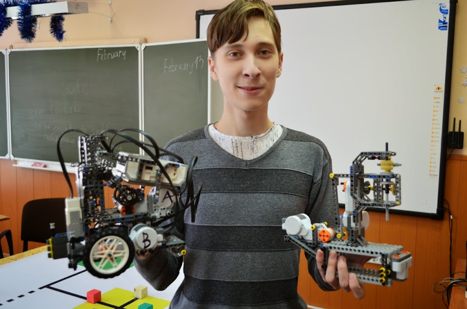

Сегодня — это школа робототехники и программирования, в которой Ваш ребёнок в ненавязчивой форме, проходит знакомство с физикой, математикой, программированием, устройством компьютера в игровой форме, начиная уже с первого класса, учится собирать и программировать специальные модели роботов из элементов конструктора Lego, а также получает начальные знания программирования, на таких языках, как Scratch, Ev3, Python. Обучение для ребят проходит в небольших группах до 12 человек.
Что Получает ребенок на заданиях Techno Robot:
1. Основы проектирования, инженерного дела и программирования
2. Применение на практике теоретических знаний таких предметов, как математика и физика
3. Развитие мелкой моторики рук, навыки общения, а также обогащение словарного запаса
4. Формирование воображения, творческих способностей, логического и абстрактного мышления
5. Умение концентрироваться при выполнении различных задач, самостоятельность и усидчивость
Новости
Мастер-класс в Центральной районной библиотеке Красносельского района
В минувший четверг прошел наш выездной мастер-класс в Центральной районной библиотеке Красносельского района. Ребята познакомились с удивительным миром программирования, с основами конструирования и моделирования роботов. Педагоги рассказали юным участникам мастер-класса о том, как может быть мир науки и техники увлекателен и интересен.
Мастер-класс с библиотеке «Остров сокровищ»
Вчера мы познакомили 45 ребят от 4-х до 12 лет с миром робототехники и программирования в библиотеке «Остров Сокровищ». А уже в субботу нас ждут детки из Библиотечно-информационного центра «Интеллект», чтобы впервые попробовать самостоятельно собрать и запрограммировать модель робота из деталей конструктора Lego education. Мы уже в пути и с нетерпением ждём этой встречи.
Бесплатные мастер-классы по робототехнике WeDo 2.0 в библиотеках
Приглашаем ребят от 4 до 12 лет на увлекательный мастер-класс по робототехнике. Участники смогут попробовать свои силы в сборке и программировании различных моделей, собранных из деталей конструктора Lego education. Педагоги Школа робототехники СПб расскажут юным участникам мастер-класса о том, насколько интересен и занимателен может быть мир науки, который наглядно отвечает на главные вопросы: «зачем?» и «почему?».
Преподаватели
Алексей Воробьев Образование: В настоящее время я учусь в СПБГЭТУ ЛЭТИ по специальности «Прикладная математика и информатика». Работа: В университете веду лабораторные занятия для 2 курса по дисциплинам «Алгоритмы и структуры данных» и «Анализ и построение алгоритмов». Помимо учебной деятельности я помогаю одной из групп первокурсников на своей кафедре освоиться с новой для них жизнью в университете, т.е. являюсь куратором. Чему обучаю ребят: Во время обучения понял, что целостное видение мира или же конкретной области знаний важнее простого запоминания набора разрозненных фактов. Поэтому занятия я стараюсь выстраивать в форме понятной логической последовательности: Формулирование проблемы -> Поиск методов решения -> Применение на практике.
Александр Казаков Образование: В 2007 году с отличием окончил Ижевский промышленно-экономический колледж по специальности «Электромонтёр», что дало мне немалые познания в электротехнике и понимание устройства, работы множества электрических приборов. В 2012 году с отличием окончил Удмуртский социально-педагогический колледж по специальности «Педагог дошкольного образования». До 2017 изучал менеджмент проектов в Удмуртском Государственном университете. Чему обучаю ребят: На мой взгляд, главная задача педагога – увлечь детей, показать, что расширение границ познания и развитие интеллекта – самая увлекательная игра на свете. Программирование – удивительный мир, в котором реализовать любую, даже самую фантастическую, но желанную небылицу – лишь дело опыта, знаний и навыка, и этому можно научиться. Работа: Сейчас работаю преподавателем в Школе робототехники и программирования. Параллельно этому веду научные шоу-программы для детей и взрослых.
Роман Зыков Образование: Среднее-специальное образование «Техник по автоматизации технологических процессов» факультета СПО ГУАП (гос. университета аэрокосмического приборостроения, СПб). Получил образование «Инженер по управлению качеством технологических процессов» в институте инноватики и базовой магистерской подготовки ГУАП на кафедре «Инновации и интегрированных систем качества». Чему обучаю ребят: На мой взгляд, главная задача педагога – увлечь детей, показать, что расширение границ познания и развитие интеллекта – самая увлекательная игра на свете. Программирование – удивительный мир, в котором реализовать любую, даже самую фантастическую, но желанную небылицу – лишь дело опыта, знаний и навыка, и этому можно научиться. Работа: С 2017-го года являлся преподавателем объединений «Робототехника» и «Начальное техническое моделирование» в ДДТ Петродворцового р-на, с 2018-го преподавателем школы Робототехники и руководителем кружка робототехники на базе ГУАП. с 2019-го года преподавателем кафедры мехатроники и робототехники в ФСПО ГУАП.
Дарья Горбунова Образование: Я учусь в ИТМО на факультете «Системы управления и робототехники», потому что с детства мечтала стать инженером, строить новые машины и космические корабли. Очень люблю математику и всегда говорю о том, что есть какая-то магия в числах и в том, что огромный пример на всю доску можно свести к простому ответу из одной цифры. Чему обучаю ребят: Считаю, что моей главной задачей является донесение мысли о том, что точные науки — это очень красиво. Может быть, даже гораздо прекрасней живописи или танца. Строчки программного кода могут сливаться в симфонию алгоритмов, которые производят на свет какое-то новое чудо. Механическая конструкция может настолько обрасти деталями, что тоже станет искусством. Дети помогают мне видеть эту красоту в цифрах и командах. Когда у них сходится задача, компилируется код или работает то, что они собрали, глаза ребят горят восторгом и желанием познавать точные науки дальше.
Наши преимущества
Индивидуальный подход
Мы работаем в группах малого состава, чтобы успеть с каждым разобрать занимательные и непонятные вопросы.
Квалифицированные кадры
Профессионализм наших преподавателей позволяет найти подход, вовлечь в мир робототехники, программирования и творчества каждого ребенка!
Учебные центры в вашей школе
Детям не нужно покидать здание своей школы, а родителям долго размышлять о том, как привезти своих детей к нам.
Собственная уникальная программа
Уже на первом занятии ребенок может самостоятельно написать программу, по которой будет действовать робот!
Отзывы
Оксана Морозова
Ходим второй сезон первый уровень.
За время каникул сравнили с аналогичным кружком и готова написать отзыв
Безусловным плюсом считаю наличие профессионального педагогического подхода. Имеют четкую образовательную программу. В каждом занятии дети изучают детали механики, их влияние на подвижность конструкции.
Педагоги умеют найти подход как к детям так и к родителям.
Все занятия заканчиваются презентацией результата деятельности за занятии. С повторением деталей которые используются.
Elena
Здравствуйте!
Самый главный критерий качества для меня как родителя — ребёнок мой довольный идёт на занятия и такой же довольный возвращается с них, рассказывая о том, что «творили» на занятии и сколько легобит удалось заработать ) Со всеми с кем приходилось общаться из преподавателей и контакт-центром по вопросам организации — все предельно ясно и чётко излагается, при этом все очень доброжелательные. Ставлю твёрдую 5 )
Anna
Сын в восторге от занятий и молодых ребят, которые их обучают. Ждёт воскресения с нетерпением. Когда узнал, что будут занятия между семестрами, сильно обрадовался. Спасибо за все занятия и отдельно за дополнительные: летняя школа и тайная комната. Сын ждёт с нетерпением
Дулина Татьяна
В нашей семье есть 2 больших поклонника Lego: папа и сын. У сына с двух лет Duplo, потом все базовые наборы, City, далее Technic. Несколько месяцев назад попалась информация о наборе в секцию Лиги Роботов в Биотехнопарке в Кольцово — и тут стало ясно, что сыну повезло больше, чем папе )))) — его ждет еще больше конструкторов, уникальных деталей, новые знания в области механики и программировании, интересные проекты, общение с единомышленниками и преподавателями, с которыми ребята на одной волне и которые всегда помогут советом.
Желаю дальнейшего процветания и успехов в соревнованиях! Спасибо!